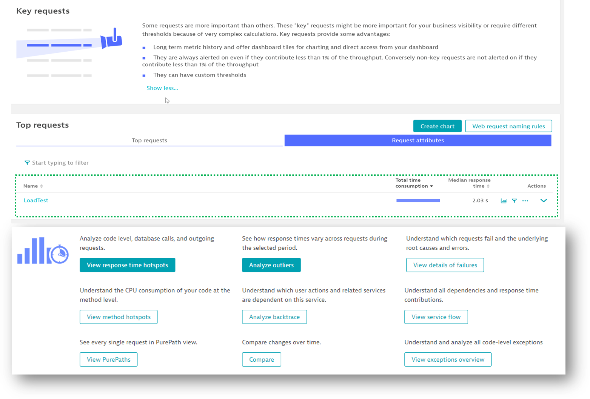

The labs contains the steps for Automate Feedback: Integration of Load Test Tools with Dynatrace Session 1 training.
You will get access to a EC2 instance that has been provided for the purposes of this training.
Prerequisites
- Dynatrace SaaS/Managed Account. Get your free SaaS trial here.
- Chrome Browser
What You'll Learn
- Integrate JMeter with Dynatrace.
- Push events in Dynatrace and create request-attributes
- Dev/Test team can isolate the requests invoked during the load-tests.
By integrating Dynatrace into your existing load testing process, you can stop broken builds in your delivery pipeline earlier.

Tag tests with HTTP headers
While executing a load test from your load testing tool of choice (JMeter, Neotys, LoadRunner, etc) each simulated HTTP request can be tagged with additional HTTP headers that contain test-transaction information (for example, script name, test step name, and virtual user ID). Dynatrace can analyze incoming HTTP headers and extract such contextual information from the header values and tag the captured requests with request attributes. Request attributes enable you to filter your monitoring data based on defined tags.

Full integration and approach is documentated [here](https://www.dynatrace.com/support/help/setup-and-configuration/integrations/third-party-integrations/test-automation-frameworks/dynatrace-and-load-testing-tools-integration/)
You can use any (or multiple) HTTP headers or HTTP parameters to pass context information. The extraction rules can be configured via Settings > Server-side service monitoring > Request attributes.
The header x-dynatrace-test is used in the following examples with the following set of key/value pairs for the header:
VU | Virtual User ID of the unique user who sent the request. SI | Source ID identifies the product that triggered the request (JMeter, LoadRunner, Neotys, or other) TSN | Test Step Name is a logical test step within your load testing script (for example, Login or Add to cart. LSN | Load Script Name - name of the load testing script. This groups a set of test steps that make up a multi-step transaction (for example, an online purchase). LTN | The Load Test Name uniquely identifies a test execution (for example, 6h Load Test – June 25) PC | Page Context provides information about the document that is loaded in the currently processed page.


Creating Tags
Tagging is a powerful mechanism. However, to reap its benefits, tagging should be used carefully and in a meaningful way. To guide you towards this end, we provide you with specific recommendations and best practices, which are described below. With auto-tagging based on metadata, tags can be generated automatically and assigned to monitored entities with the specific metadata values that Dynatrace detects automatically.
Naming Rules
Dynatrace automatically provides names, but they don't enable you to quickly identify where an application or service belongs to. To achieve this, it's recommended that you use service naming rules and process group naming rules. This can be done in Dynatrace using metadata imported from the monitored applications.
You can use Dynatrace Naming Rules to differentiate requests

Documentation here
Annotate Dynatrace with Events
The Events API delivers details about all uncorrelated events that Dynatrace collects within your environment. Information returned for each event includes attributes about the event source, the entity where the event was collected, and other event-specific details.
PUSH endpoint enables third-party systems such as CI platforms (Jenkins, Bamboo, Electric Cloud, etc.) to provide additional details for Dynatrace automated root cause analysis.

Documentation here
Compare and Analyze events
There are different ways to analyze the data. Your approach should be based on the type of performance analysis you want to do (for example, crashes, resource and performance hotspots, or scalability issues).

Documentation here
The steps that we ran through could be automated with by initiating HTTP requests through curl.

We hope you enjoyed this lab and found it useful. We would love your feedback!